Thousands of twinkling lights, giant inflatables, a glowing reindeer herd, a nativity scene and Santa himself — our whole house and driveway turned into a walk-through Christmas wonderland. Come by and feel the magic!
📍 Get Directions ✨ See the Photos ▶ Watch the IntroA little taste of the display — press play and step into our Christmas wonderland.
Every corner of the house is decorated — the roof, the driveway, the garden and even a little North Pole cabin. Our driveway is open, so feel free to walk in, look around and take photos.
Sit beside Santa in front of the garage, next to a towering nutcracker — the perfect family photo.
A whole herd of sparkling reindeer and a shining angel light up the front garden.
Walk under arches of rainbow lights and giant glowing stars over the driveway.
Santa, snowmen, a Minion, a gingerbread house, cartoon friends and a Christmas train.
A beautiful illuminated nativity in a wooden stable, at the heart of the display.
A cozy log cabin marked "North Pole — 1225 Miles," with Santa waving from the window.
Tap any photo to see it bigger. Better yet — come and see it in person, it looks even more magical at night.
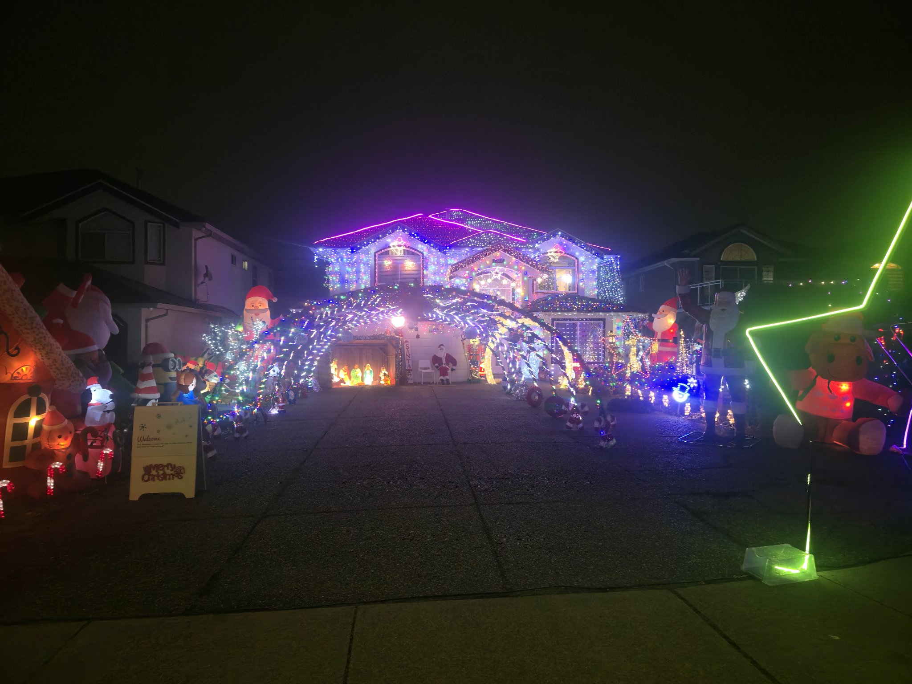
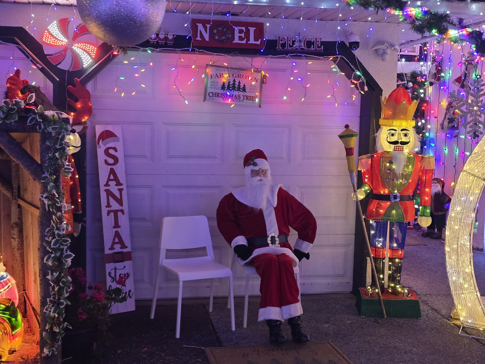
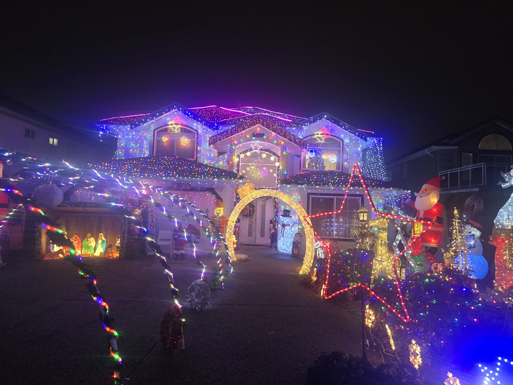
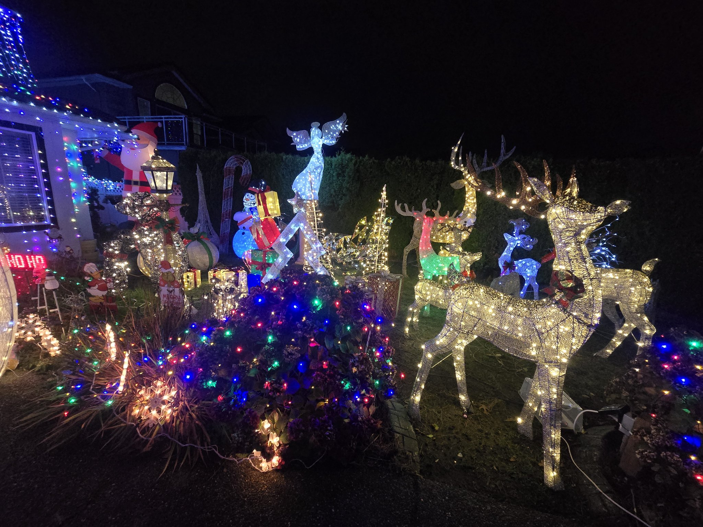
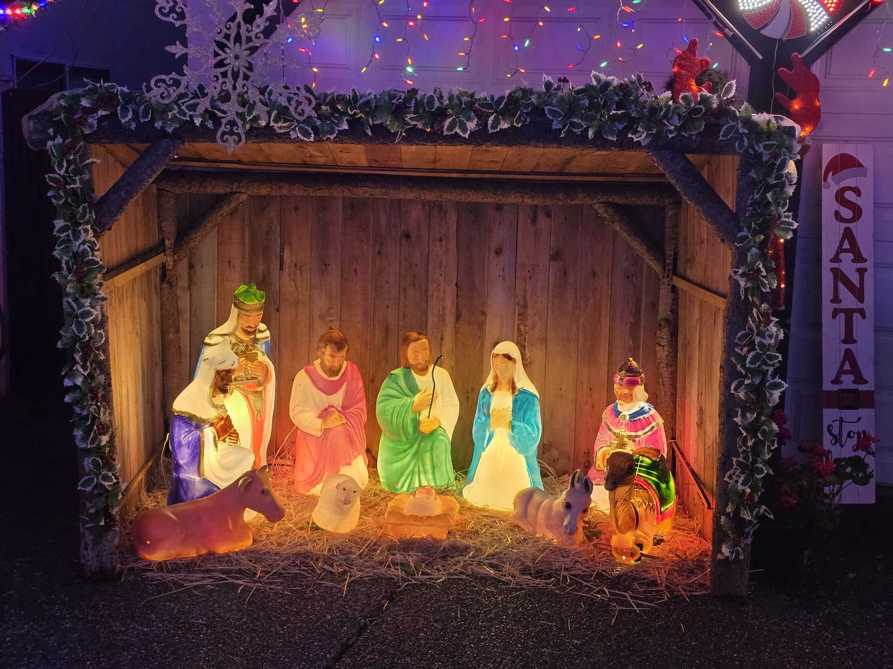
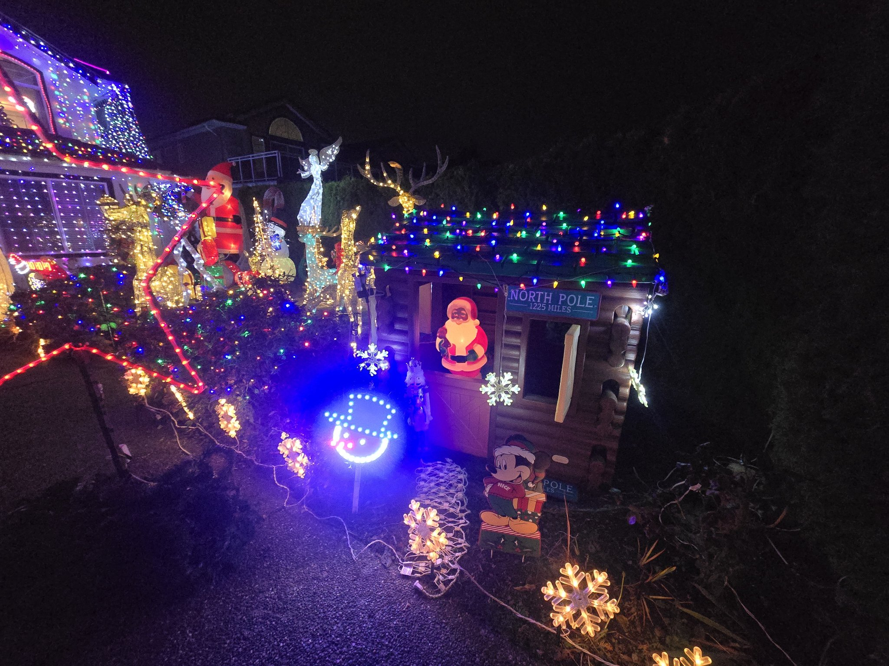
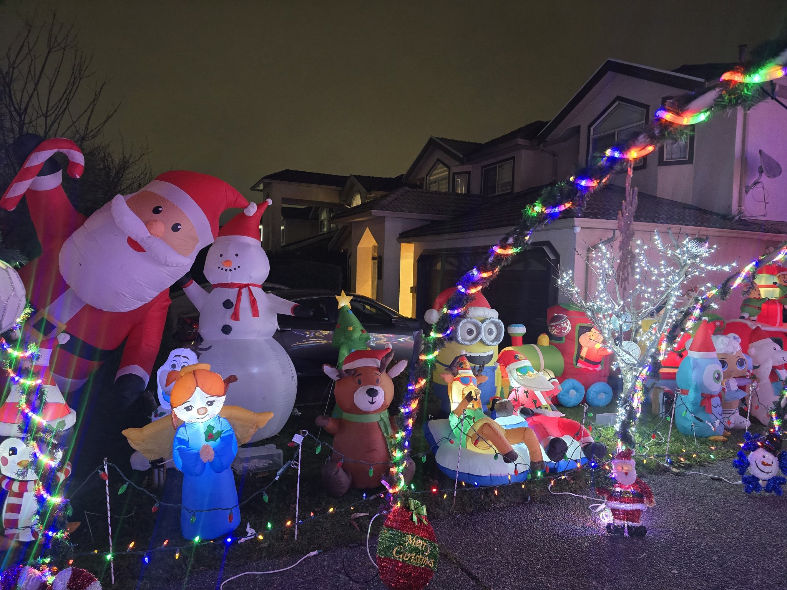
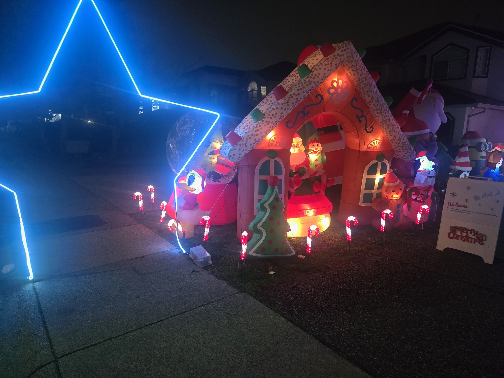
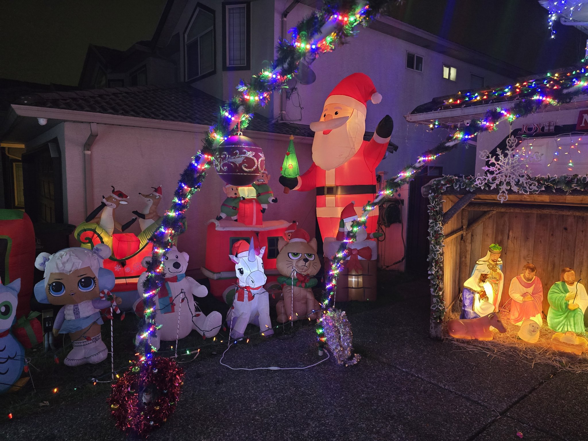
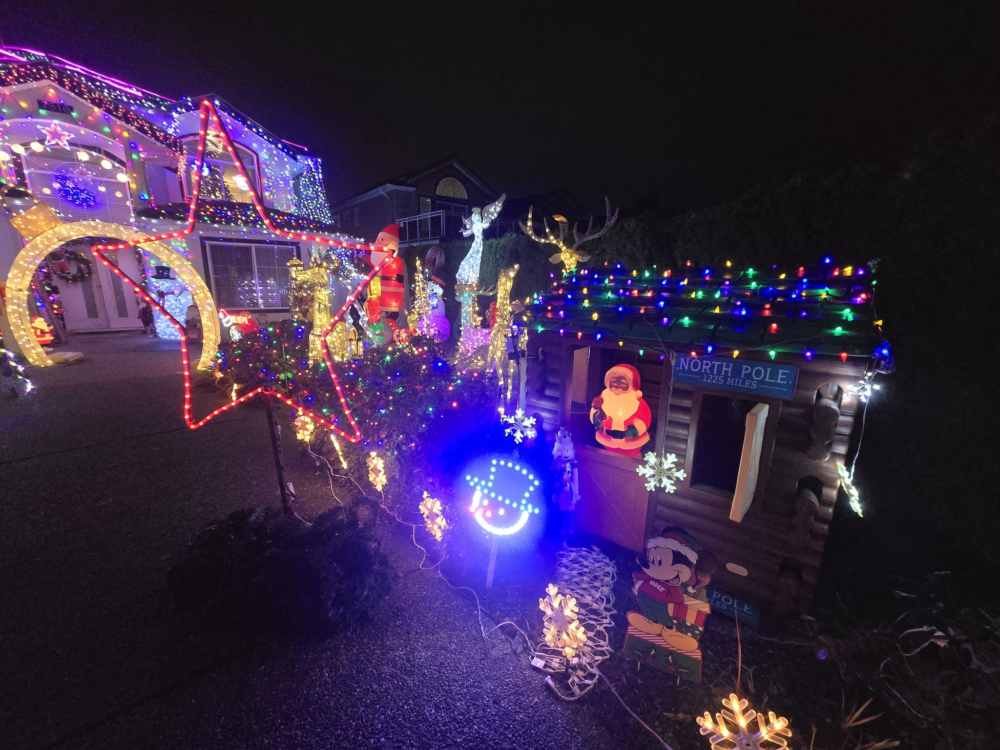
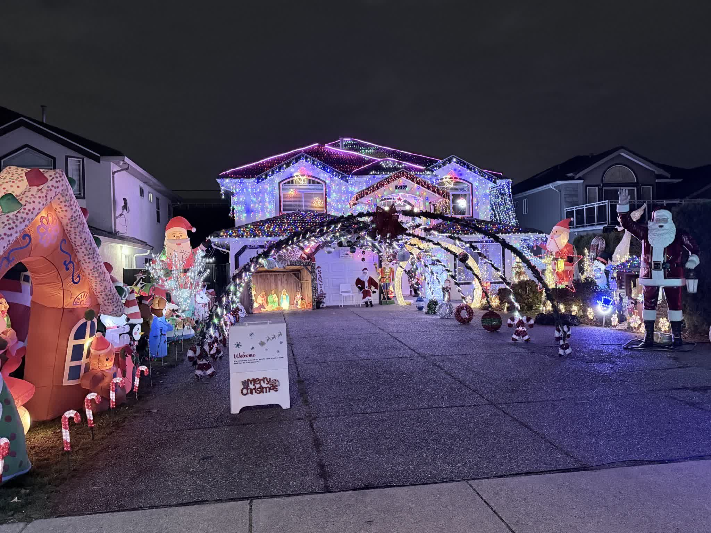
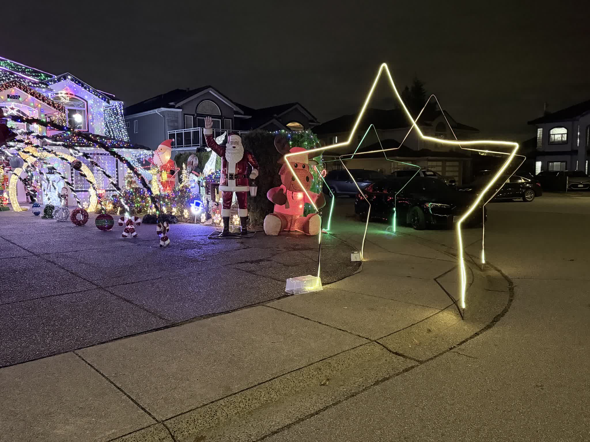
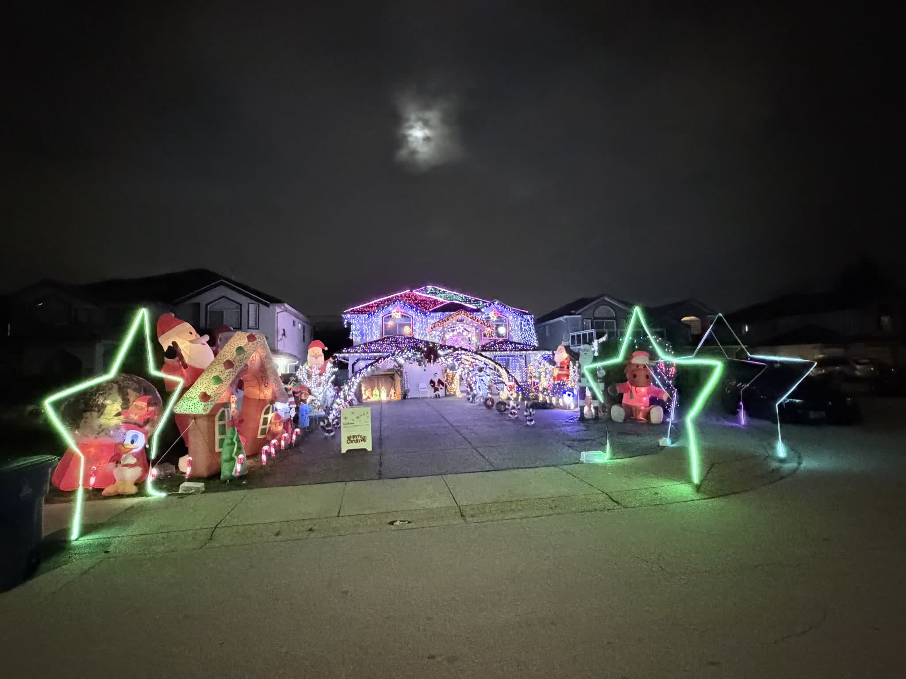
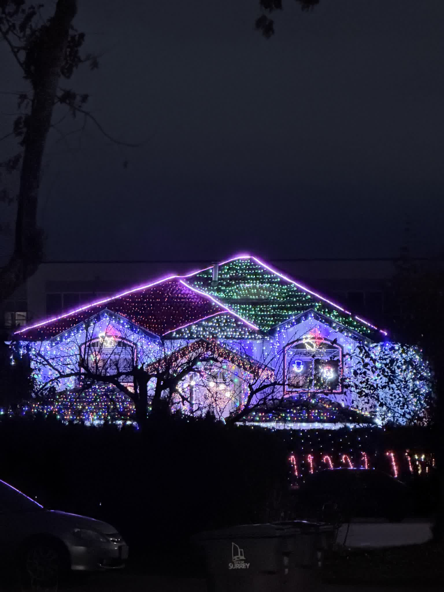
We're in the Newton neighbourhood of Surrey, minutes from King George Boulevard. Bring the family, bring your camera — and please be kind to our neighbours when parking.
7516 129A Street
Surrey, BC V3W 1B1
Newton, Surrey — near 76 Avenue & 128 Street.
Everything you need to know before you come.
You'll find us at 7516 129A Street in Newton, Surrey, BC (V3W 1B1) — a residential street just off 128 Street, near 76 Avenue.
Yes, 100% free. We decorate for the love of Christmas and to share some joy with our neighbours and visitors from all over Metro Vancouver.
Yes! Our driveway is open to visitors. Feel free to walk in, take a better look and snap photos — just please stay on the driveway and be gentle with the decorations.
The display looks best after dark. Evenings in December, roughly 5 PM to 10 PM, are ideal. Weeknights are a little quieter than weekends.
Absolutely — kids love the inflatables, the Santa photo spot and the North Pole cabin. It's a favourite family stop on Surrey Christmas light tours.